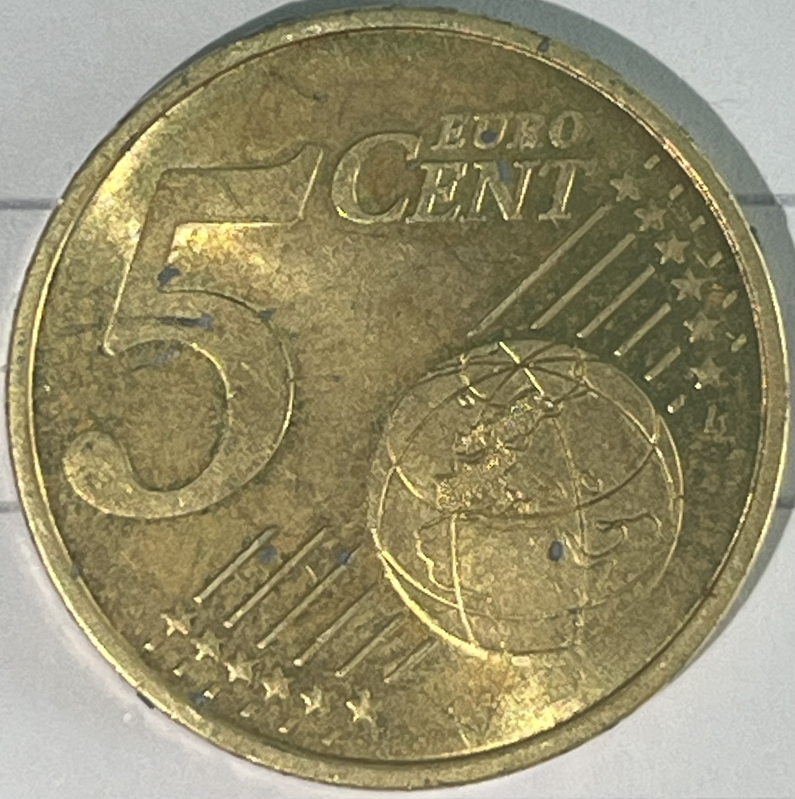

- Stativ mit Klemme und Muffe
- 2 kleine Bechergläser
- Reagenzglasklammer
- (Lämpchen/Motor)
- Voltmeter
- Kabel
- Krokodilklemmen
- ein Stück dünne Pappe
Experiment: „Vergolden“ und „Versilbern“ von Kupfermünzen
Materialien
Chemikalien
- 20ml 10%-ige Natronlauge (NaOH(aq))
- 2 kleine Spatelspitzen Zinkpulver
- Ethanol
- Salzsäure (HCl(aq))

Natronlauge und Salzsäure sind ätzend

Zinkpulver und eventuell entstehende Dämpfe sind entzündlich
Durchführung
- Zuerst müssen die Münzen gereinigt werden. Dazu sollten sie im Becherglas mit Salzsäure bedeckt werden. Für ca. eine Minute darin sauber werden lassen, dabei ab und zu umrühren und die Münzen mit der Tiegelzange umdrehen.
- Die Münzen mit der Zange aus dem Becherglas holen, dieses ausleeren und auswaschen. Dann Schritt 1 mit Ethanol statt Salzsäure wiederholen.
- Das Becherglas wieder ausleeren und gründlich säubern. Danach darin die 10%-ige Natronlauge und das Zinkpulver vermischen und die Münzen hineingeben.
- Das Zink-Natronlauge-Gemisch mit dem Münzen auf der Heizplatte vorsichtig bis zum Sieden erhitzen, dann die Heizplatte ausschalten und die Münzen noch einige Minuten im Becherglas liegen lassen. Dabei immer wieder umrühren und die Münzen wenden, sodass sie von allen Seiten versilbert werden können.
- Die Münzen mit der Tiegelzange aus dem Becherglas holen und die Zinkklumpen von ihnen abwaschen. Dabei unbedingt vorsichtig agieren, weil sonst die empfindliche Zinkschicht abgehen könnte. Das restliche Zink-Natronlauge-Gemisch der Lehrkraft zur Entsorgung geben.
- Eine Münze kann jetzt so silbern gelassen werden. Die andere Münze immer wieder kurz durch die rauschende Flamme eines Bunsenbrenners schwenken, bis sie sich golden verfärbt hat.
Beobachtung
Die Münze wird golden.

CC BY-SA 4.0" data-source="Eigenes Bild" data-author="Jakob D., Jakob K." data-title="Goldene Münze">Erklärung
Bei dem Experiment färbt sich die Münze, die erhitzt wurde, golden. Das Zink, das sich zuvor an der Oberfläche angelagert hat, hat einen Schmelzpunkt von 419,5 °C. Deshalb schmilzt es durch die Hitze der Flamme, die Zinkatome dringen so in die oberste Schicht der Kupfermünze ein. Dabei vermischen sie sich zu der Legierung Messing, welche eine goldene Farbe hat.